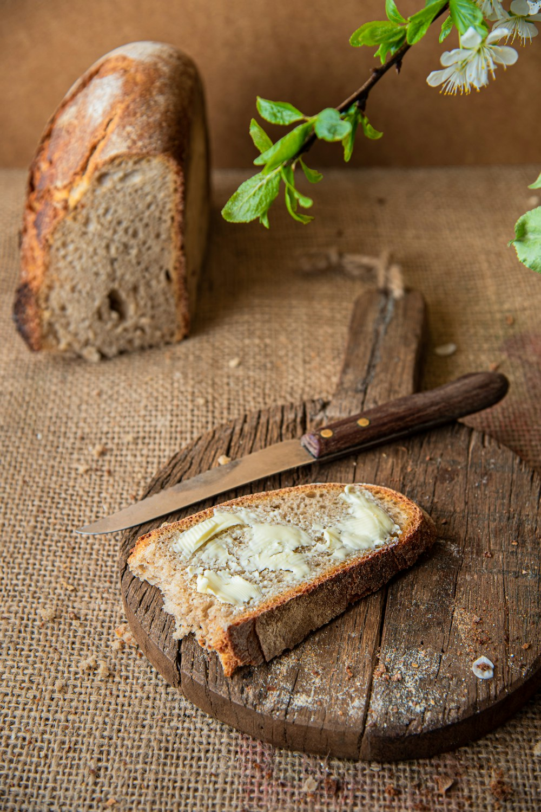

Know what the names mean
Get to know common additives and their uses, from preservatives to emulsifiers. See how they help food keep, stay mixed or take on its texture and color.
A self-paced course
Food labels can leave you wondering what an ingredient is and why it’s there. Learn what common additives do in familiar foods, with real packages to read and short exercises to try. Start with the ingredients that help food keep.
Let’s start with preservatives
Recognize common additives on an ingredient list.
Explain why an additive is used in a particular food.
Use evidence to judge claims about additives.
Preservatives is available now. Open the lesson below, or browse a preview of the other chapters.
Read ingredient names and nearby explanations on food packages. Learn to find an additive’s full name and identify which information comes from the label and which needs another source.
Keeping food fresh
Tortillas, dried apricots, drinks and bacon introduce common preservatives, with one companion antioxidant in the bacon example. Connect each ingredient to its function, read freshness and storage statements, and apply what you have learned to a jar of strawberry preserves.
Start chapter 01Build on the brief introduction in Chapter 01. Compare antioxidant ingredients in different foods, explore changes in flavor and color, and use packaging and storage information to explain how food quality is protected.
Working with texture
Explore foods whose ingredients tend to separate. Explain how an emulsifier helps a mixture stay dispersed, and distinguish keeping ingredients mixed from making a food thicker.
Compare the thickness and texture of different foods. Identify an additive’s role in each example and explain how the same ingredient can have different functions in different recipes.
Looking at appearance
Find out why manufacturers add color and where color additives come from. Explain what a color does in a food and assess whether its source supports a claim about its use or safety.
Read an unfamiliar ingredient list, recognize additive families and explain their roles in that food. Use the label and supporting information to evaluate a claim about the product.
Get to know common additives and their uses, from preservatives to emulsifiers. See how they help food keep, stay mixed or take on its texture and color.
Look closely at actual food labels and connect ingredient names with their roles. Everyday examples such as tortillas and dried apricots make a useful place to start.
Meet the 1902 Poison Squad, follow a change in drink regulations and take a closer look at common misconceptions about additives.
The lessons link to ingredient guides, manufacturers’ product pages and the sources behind each food story.
Explore the U.S. Food and Drug Administration’s guide to ingredient functions.
Photography: Joanna Stołowicz / UnsplashBread photography by Joanna Stołowicz.